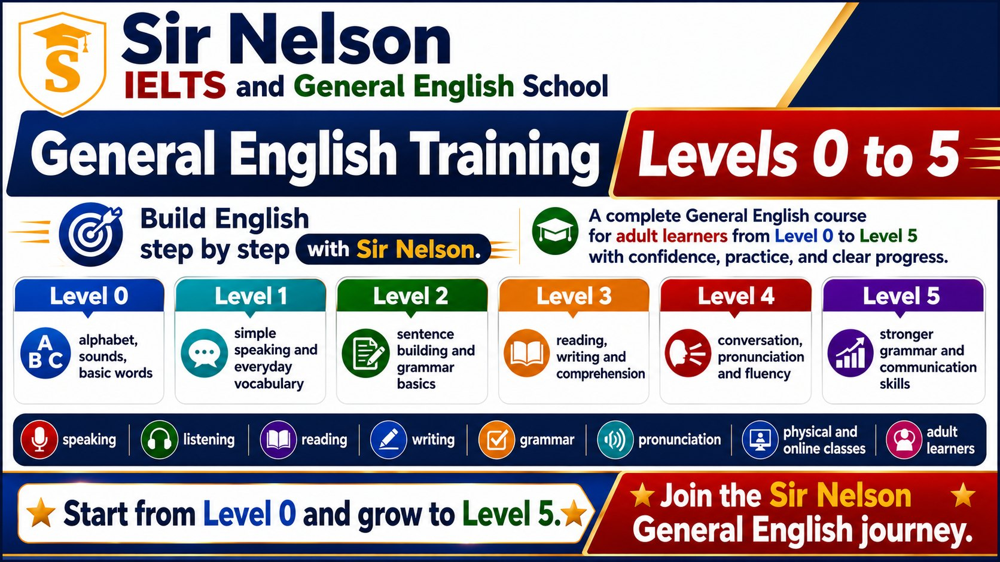
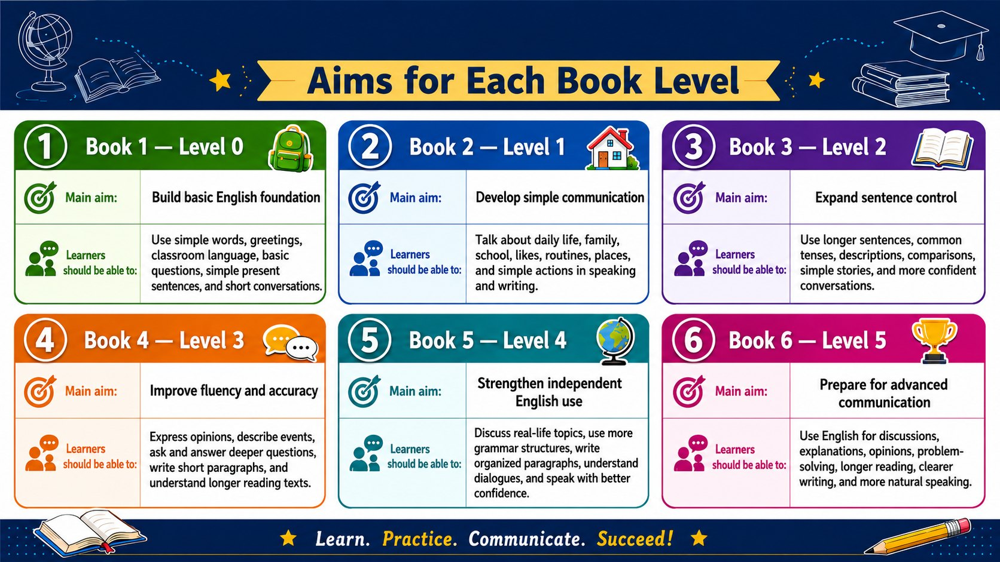
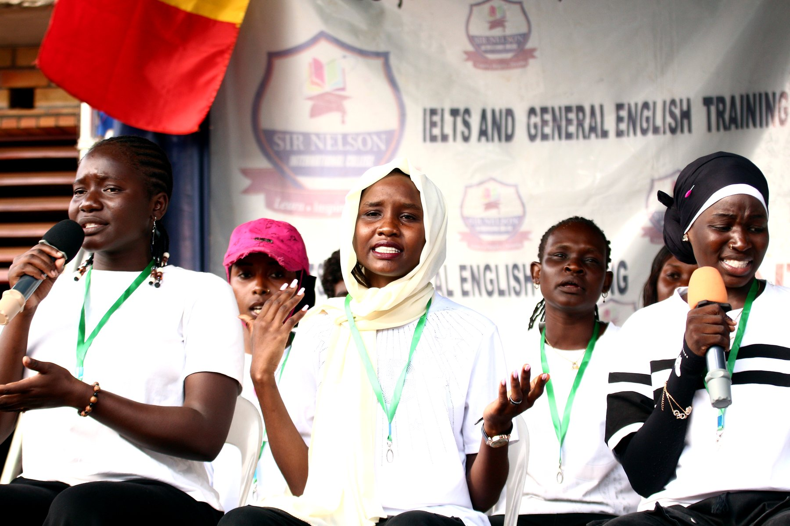

Book 1 - Level 0
Main aim: Build basic English foundation.
Learners use simple words, greetings, classroom language, basic questions, simple present sentences, and short conversations.
Our Level 0 to Level 5 pathway follows our General English course books, with Book 1 used for Level 0 and each next book used for the next level.

The guide below shows the main aim of each General English course book level and what learners should be able to do by the end of that stage.

Each level follows the aim of its corresponding book, helping learners move from first foundations to stronger independent communication.
Main aim: Build basic English foundation.
Learners use simple words, greetings, classroom language, basic questions, simple present sentences, and short conversations.
Main aim: Develop simple communication.
Learners talk about daily life, family, school, likes, routines, places, and simple actions in speaking and writing.
Main aim: Expand sentence control.
Learners use longer sentences, common tenses, descriptions, comparisons, simple stories, and more confident conversations.
Main aim: Improve fluency and accuracy.
Learners express opinions, describe events, ask and answer deeper questions, write short paragraphs, and understand longer reading texts.
Main aim: Strengthen independent English use.
Learners discuss real-life topics, use more grammar structures, write organized paragraphs, understand dialogues, and speak with better confidence.
Main aim: Prepare for advanced communication.
Learners use English for discussions, explanations, opinions, problem-solving, longer reading, clearer writing, and more natural speaking.
Every class follows the relevant General English course book while giving learners time to speak, ask questions, receive correction, and use language in context. Students can choose physical classes, online classes, or both depending on availability.

Students from outside Uganda can request admission to study General English physically at Sir Nelson IELTS and General English School in Kampala.